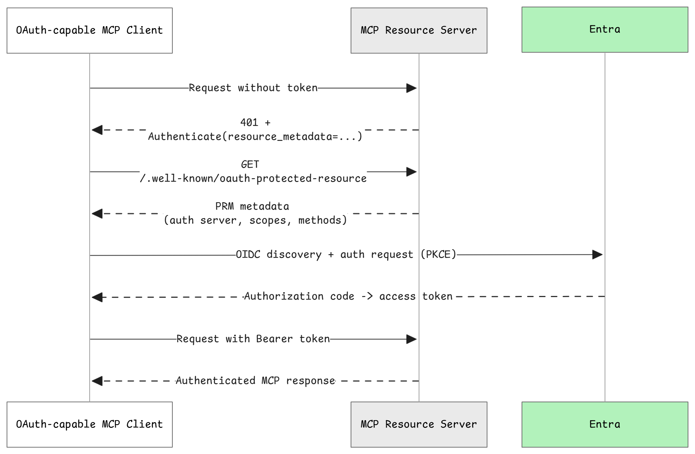
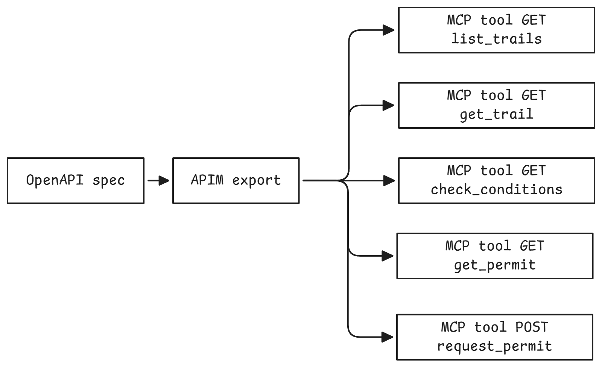

Gateway, governance, content safety, and network controls for MCP at scale.
In this section, you'll deploy two MCP servers behind APIM: one native MCP server (Sherpa) and one REST API exported as MCP (Trail API). You'll configure OAuth with automatic discovery using Protected Resource Metadata (RFC 9728) and add rate limiting to protect your backends.
Working Directory
All commands in this section should be run from the camps/camp2-gateway directory:
.sh script has a .ps1 equivalent. Use ./scripts/X.ps1 instead of ./scripts/X.sh.
What is PRM (Protected Resource Metadata)?

RFC 9728 defines PRM as a standard for OAuth autodiscovery. Instead of manually configuring:
- Authorization server URL
- Token endpoint
- Required scopes
- Audience values
Clients can query /.well-known/oauth-protected-resource and discover everything automatically.
VS Code's MCP client supports PRM, which means:
- You configure just the MCP server URL
- VS Code queries the PRM endpoint
- VS Code automatically initiates OAuth flow with correct parameters
- User signs in once
- VS Code uses the token for all subsequent requests
No manual configuration required! This is the modern OAuth experience.
Waypoint 1.1: Expose MCP Server via Gateway (No Auth → OAuth)¶
What you'll learn: How to use Azure API Management's MCP passthrough feature to expose and govern an existing MCP server. APIM acts as a transparent gateway that forwards MCP protocol messages while adding enterprise security controls (authentication, rate limiting, monitoring) without modifying the upstream MCP server.
| Component | Role |
|---|---|
| VS Code (Client) | Sends MCP requests |
| APIM (Gateway) | OAuth validation, rate limiting, monitoring |
| Sherpa MCP Server | Receives clean, authenticated requests |
Key benefits of APIM's MCP passthrough:
- Zero-touch integration - Expose existing MCP servers without code changes
- Centralized security - Add OAuth, rate limiting, and content safety at the gateway
- Protocol-aware - APIM understands the MCP protocol and can route messages appropriately
- Enterprise governance - Monitor, audit, and control MCP traffic
- Transparent forwarding - Upstream server receives authentic MCP protocol messages
OWASP Risk: MCP07 (Insufficient Authentication & Authorization)
Without authentication, your MCP server is completely open to the internet. For production MCP servers, you need user-level authentication with OAuth.
Step 1: Deploy Vulnerable Server
Let's start by deploying the Sherpa MCP Server with no authentication at all:
What does this script do?
The deployment script performs these steps:
- Builds and deploys Sherpa MCP Server - Runs
azd deploy sherpa-mcp-serverto build the Docker image and deploy to Container Apps - Creates APIM backend - Configures a backend in APIM pointing to the Container App URL
- Creates MCP passthrough in APIM - Sets up a transparent gateway that forwards MCP protocol messages to Sherpa without modification
What is MCP passthrough? APIM acts as an intelligent proxy that understands the MCP protocol. It can inspect MCP messages, apply policies (auth, rate limiting), and forward requests to the upstream server. The upstream Sherpa MCP Server receives native MCP protocol messages and doesn't need any awareness that APIM exists.
This gives you a working MCP server behind APIM, but with no authentication.
What is the Sherpa MCP Server?
Sherpa is a FastMCP server that provides mountain expedition tools:
get_weather- Current weather conditions at different elevationslist_trails- Available climbing routes and difficulty ratingscheck_gear- Verify required equipment for specific conditions
Why read-only? Sherpa only exposes read operations (queries) with no write capabilities (no data modification, file system access, or system commands). This follows a key enterprise pattern: separate read from write operations. Read-only MCP servers are safer for demos and initial deployments because they limit the blast radius of potential exploits. Once you've validated security controls at the gateway (authentication, rate limiting, content safety), you can confidently add write operations or deploy separate write-enabled MCP servers with stricter controls.
Expected output:
==========================================
Sherpa MCP Server Deployed
==========================================
Endpoint: https://apim-xxxxx.azure-api.net/sherpa/mcp
Current security: NONE (completely open)
Next: Test the vulnerability from VS Code
1. Add the endpoint to .vscode/mcp.json
2. Connect without any authentication
3. Then run: ./scripts/1.1-fix.sh
Step 2: Exploit - Anyone Can Access
Test the vulnerability by connecting from VS Code:
1. Get your endpoints:
2. Configure VS Code to connect:
Create or update .vscode/mcp.json in your workspace root:
{
"servers": {
"sherpa-direct": {
"type": "http",
"url": "https://your-container-app.azurecontainerapps.io/mcp"
},
"sherpa-via-apim": {
"type": "http",
"url": "https://your-apim-instance.azure-api.net/sherpa/mcp"
}
}
}
Replace the URLs with your actual endpoints from step 1.
3. Connect from VS Code:
Open the mcp.json file in VS Code and test each endpoint individually:
-
Test 1: Direct Container App access
- Click the Start button above
sherpa-direct - This connects directly to the Container App, bypassing APIM
- Connection succeeds with no authentication prompt
- Click the Start button above
-
Test 2: APIM Gateway access
- Click the Start button above
sherpa-via-apim - This connects through the APIM gateway
- Connection also succeeds with no authentication prompt
- Click the Start button above
4. Invoke tools from either connection:
Both endpoints allow unauthenticated access. Try invoking:
get_weather- See current mountain weathercheck_trail_conditions- View trail statusget_gear_recommendations- Get equipment suggestions
Security Impact: Complete Exposure
The vulnerability: VS Code connected with zero authentication!
- No login required
- No credentials needed
- Anyone with the URL can connect
- No audit trail of who accessed what
Real-world scenario: Your MCP server exposes tools for querying customer data:
- Anyone who discovers the URL can call
get_customer_data() - Bots and scrapers can access your tools
- Competitors access your business intelligence
- No way to stop them without taking the service offline
- No way to implement rate limiting per user
This is MCP07: Insufficient Authentication & Authorization - the system can't identify users or enforce authorization.
Step 3: Fix - Add OAuth with PRM Discovery
Apply OAuth validation and enable automatic discovery:
This script deploys:
1. RFC 9728 PRM Metadata Endpoints Creates two discovery endpoints for OAuth autodiscovery:
- RFC 9728 path-based:
https://apim-xxxxx.azure-api.net/.well-known/oauth-protected-resource/sherpa/mcp - Suffix pattern:
https://apim-xxxxx.azure-api.net/sherpa/mcp/.well-known/oauth-protected-resource
Both return the same PRM metadata:
{
"resource": "https://apim-xxxxx.azure-api.net/sherpa/mcp",
"authorization_servers": [
"https://login.microsoftonline.com/your-tenant-id/v2.0"
],
"scopes_supported": ["your-mcp-app-client-id/user_impersonate"],
"bearer_methods_supported": ["header"]
}
PRM endpoint policy
The PRM operation uses <return-response> before <base /> so the response is returned immediately, skipping OAuth validation (otherwise the discovery endpoint itself would require a token):
<inbound>
<!-- Return immediately - skip OAuth validation -->
<return-response>
<set-status code="200" reason="OK" />
<set-header name="Content-Type" exists-action="override">
<value>application/json</value>
</set-header>
<set-body>@{
return JsonConvert.SerializeObject(new {
resource = "{{apim-gateway-url}}/sherpa/mcp",
authorization_servers = new[] {
"https://login.microsoftonline.com/{{tenant-id}}/v2.0"
},
scopes_supported = new[] {
"{{mcp-app-client-id}}/user_impersonate"
},
bearer_methods_supported = new[] { "header" }
});
}</set-body>
</return-response>
</inbound>
2. OAuth Validation Policy Applies token validation to the Sherpa MCP API that:
- Validates Entra ID tokens against your tenant
- Checks the token audience matches your MCP app
- Returns a proper 401 with PRM discovery link on failure
JWT validation policy
The validate-azure-ad-token element does the heavy lifting -- it verifies the token issuer, audience, and required scopes in a single policy block:
<inbound>
<base />
<validate-azure-ad-token tenant-id="{{tenant-id}}"
failed-validation-httpcode="401"
failed-validation-error-message="Unauthorized">
<audiences>
<audience>{{mcp-app-client-id}}</audience>
</audiences>
<required-claims>
<claim name="scp" match="any">
<value>user_impersonate</value>
</claim>
</required-claims>
</validate-azure-ad-token>
</inbound>
When authentication fails, APIM returns:
HTTP/1.1 401 Unauthorized
WWW-Authenticate: Bearer error="invalid_token", resource_metadata="https://apim-xxxxx.azure-api.net/sherpa/mcp/.well-known/oauth-protected-resource"
This tells OAuth clients where to discover authentication requirements.
APIM Native MCP Behavior
When using APIM's native MCP type (apiType: mcp), APIM automatically prepends the API path to resource_metadata URLs in WWW-Authenticate headers. Your policy should omit the API path from the header value -- APIM adds it for you.
Step 4: Validate - Confirm OAuth Works
Test that OAuth is enforcing authentication:
The script verifies:
- PRM endpoint returns correct metadata (authorization server, scopes)
- Requests without tokens return 401 (authentication required)
Expected output:
==========================================
Waypoint 1.1: Validate OAuth
==========================================
Test 1: Request without token (should return 401)
✅ Result: 401 Unauthorized (token required)
Test 2: Check WWW-Authenticate header has correct resource_metadata
✅ WWW-Authenticate includes /sherpa/mcp path
Test 3: Check 401 response body has correct resource_metadata
✅ Response body includes /sherpa/mcp path
Test 4: RFC 9728 path-based PRM discovery
GET https://apim-xxxxx.azure-api.net/.well-known/oauth-protected-resource/sherpa/mcp
✅ RFC 9728 PRM metadata returned
{
"resource": "https://apim-xxxxx.azure-api.net/sherpa/mcp",
"authorization_servers": [
"https://login.microsoftonline.com/your-tenant-id/v2.0"
],
"bearer_methods_supported": [
"header"
],
"scopes_supported": [
"your-mcp-app-client-id/user_impersonate"
]
}
Test 5: Suffix pattern PRM discovery
GET https://apim-xxxxx.azure-api.net/sherpa/mcp/.well-known/oauth-protected-resource
✅ Suffix PRM metadata returned
==========================================
Waypoint 1.1 Complete
==========================================
OAuth is properly configured. VS Code can now:
1. Discover PRM at either discovery path
2. Find the Entra ID authorization server
3. Obtain tokens and call the MCP API
Test with VS Code
To verify OAuth works end-to-end with a real token:
- Restart the
sherpa-via-apimconnection from Step 2 - VS Code will discover OAuth via PRM and prompt you to sign in
- After authentication, you can invoke MCP tools with a valid token
What You Just Fixed¶
Before (no authentication):
- No authentication at all
- Anyone on the internet can access
- No audit trail
- No access control
After (OAuth with PRM):
- Every request has user identity from JWT
- Audit logs show exactly who did what
- Can enforce user-specific permissions
- Tokens expire automatically (short-lived)
- VS Code authenticates automatically via PRM discovery
OWASP MCP07 mitigated at the gateway!
Backend Still Exposed
OAuth is now enforced at the APIM gateway, but the Container App running Sherpa is still publicly accessible. Anyone who discovers the direct Container App URL can bypass APIM entirely (as shown in Step 2's sherpa-direct test).
This is intentional for now. Network isolation is a defense-in-depth measure covered in the Network Security section, where you'll learn about patterns to restrict backend access.
Waypoint 1.2: REST API → MCP Server with OAuth¶

What you'll learn: How to use Azure API Management's REST-to-MCP feature to expose an existing REST API as an MCP server. APIM automatically transforms OpenAPI operations into MCP tools, enabling AI agents to discover and call your existing APIs without any code changes.
| Component | Protocol | Role |
|---|---|---|
| VS Code (Client) | MCP | Sends MCP tool calls |
| APIM (Gateway) | MCP → REST | Translates MCP to REST, validates OAuth + subscription key |
| Trail REST API | REST | Receives standard HTTP requests |
Key benefits of APIM's REST-to-MCP export:
- Zero-code transformation - Existing REST APIs become MCP servers automatically
- OpenAPI-driven tools - Each API operation becomes an MCP tool with proper schemas
- Unified security - Same OAuth + PRM pattern works for both native MCP and exported REST APIs
- Incremental adoption - Expose legacy REST APIs to AI agents without rewriting them
- Consistent governance - All MCP servers (native or exported) flow through the same gateway
OWASP Risk: MCP07 (Insufficient Authentication & Authorization)
Subscription keys are useful for tracking and billing, but they are NOT authentication. For AI agent access, you need OAuth with user identity.
Step 1: Deploy Trail API as MCP Server
What is the Trail API?
Trail API is a REST API that provides trail permit management:
| Operation | Method | Path | Description |
|---|---|---|---|
list_trails |
GET | /trails |
List all available hiking trails |
get_trail |
GET | /trails/{id} |
Get details for a specific trail |
check_conditions |
GET | /trails/{id}/conditions |
Current trail conditions and hazards |
get_permit |
GET | /permits/{id} |
Retrieve a trail permit |
request_permit |
POST | /permits |
Request a new trail permit |
The API has a complete OpenAPI 3.0 specification that describes each operation's parameters, request/response schemas, and documentation.
Deploy the Trail API and expose it as an MCP server through APIM:
How does REST-to-MCP export work?
When you export a REST API as an MCP server, APIM:
- Reads the OpenAPI spec - Parses operation definitions, parameters, and schemas
- Creates MCP tools - Each operation becomes a tool with the same name
- Maps parameters - Query params, path params, and body become tool arguments
- Generates descriptions - Uses OpenAPI descriptions for tool documentation
- Handles responses - Transforms REST responses into MCP tool results
Example transformation:
# OpenAPI Operation
/trails/{id}/conditions:
get:
operationId: check_conditions
summary: Get current trail conditions
parameters:
- name: id
in: path
required: true
schema:
type: string
Becomes this MCP tool:
This script deploys:
- Container App running the Trail API (REST API with OpenAPI spec)
- APIM backend pointing to the Trail API Container App
- MCP Server export in APIM with
subscriptionRequired: true - Subscription key (automatically generated and saved)
Expected output:
==========================================
Trail API Deployed as MCP Server
==========================================
Trail Services Product:
Subscription Key: a1b2c3d4...x9y0
REST Endpoint: https://apim-xxxxx.azure-api.net/trailapi/trails
MCP Endpoint: https://apim-xxxxx.azure-api.net/trails/mcp
MCP Tools available:
- list_trails: List all available hiking trails
- get_trail: Get details for a specific trail
- check_conditions: Current trail conditions and hazards
- get_permit: Retrieve a trail permit
- request_permit: Request a new trail permit
Current security: Subscription key only (no authentication!)
Step 2: Exploit - Subscription Keys Are Not Authentication
Test the MCP server with subscription keys and see why they're insufficient for auth:
1. Configure VS Code to connect:
Add the Trail MCP server to .vscode/mcp.json:
{
"servers": {
"trails-via-apim": {
"type": "http",
"url": "https://your-apim-instance.azure-api.net/trails/mcp",
"headers": {
"Ocp-Apim-Subscription-Key": "your-subscription-key"
}
}
}
}
Get your subscription key:
2. Connect and invoke tools:
- Click Start on
trails-via-apim - Connection succeeds with the subscription key
- Try invoking
list_trailsorcheck_conditions
3. The authentication problem:
The subscription key lets you connect, but it provides zero authentication:
# Alice uses the Trail MCP server
curl -H "Ocp-Apim-Subscription-Key: ${KEY}" \
"${APIM_URL}/trails/mcp"
# Bob uses the SAME subscription key
curl -H "Ocp-Apim-Subscription-Key: ${KEY}" \
"${APIM_URL}/trails/mcp"
# ❌ Both succeed with the same key!
# ❌ The MCP server can't tell Alice from Bob!
# ❌ No way to enforce per-user permissions!
Understanding Subscription Keys vs Authentication
Subscription keys are good for:
- Tracking - Know which application/team is calling
- Billing - Chargeback model by team or product
- Rate limiting - Different quotas per subscription tier
- Product management - Group APIs into products with different SLAs
Subscription keys are NOT good for:
- Authentication - Can't verify WHO the user is
- Authorization - Can't enforce per-user permissions
- Audit trails - Logs show "engineering-key" not "bob@company.com"
- Credential security - Long-lived, easily shared, no expiration
Real-world scenario: Data breach investigation.
Your audit logs show:
{
"timestamp": "2024-01-15T10:30:00Z",
"tool": "get_permit",
"subscription": "engineering-team-key",
"status": "success"
}
Who accessed the permit data? Alice, Bob, Charlie, or Miranda? You can't tell - they all share the same key.
This is MCP07: Insufficient Authentication & Authorization - subscription keys ≠ authentication.
Step 3: Fix - Add OAuth for Authentication (Keep Subscription Key for Tracking)
Add OAuth validation while keeping subscription keys for tracking/billing:
Expected output:
==========================================
Waypoint 1.2: Add OAuth to Trail MCP
==========================================
Applying OAuth validation + PRM discovery...
Subscription key: Still required (tracking/billing)
OAuth token: Now also required (authentication)
==========================================
OAuth Added to Trail MCP Server
==========================================
PRM Discovery endpoint (RFC 9728):
https://apim-xxxxx.azure-api.net/.well-known/oauth-protected-resource/trails/mcp
Security now requires BOTH:
- Subscription key (which application)
- OAuth token (which user)
What This Script Deploys
1. RFC 9728 PRM Metadata Endpoint Creates a discovery endpoint for the Trail MCP server:
- RFC 9728 path-based:
https://apim-xxxxx.azure-api.net/.well-known/oauth-protected-resource/trails/mcp
Returns PRM metadata:
{
"resource": "https://apim-xxxxx.azure-api.net/trails/mcp",
"authorization_servers": [
"https://login.microsoftonline.com/your-tenant-id/v2.0"
],
"scopes_supported": ["your-mcp-app-client-id/user_impersonate"],
"bearer_methods_supported": ["header"]
}
Why only one endpoint? In Waypoint 1.1, we created two PRM discovery endpoints for Sherpa (RFC 9728 path-based and suffix pattern). Here we only create the RFC 9728 path-based endpoint because both patterns work and one is sufficient. VS Code's MCP client will try multiple discovery paths and use whichever responds. The suffix pattern (/{path}/.well-known/oauth-protected-resource) and RFC 9728 path-based pattern (/.well-known/oauth-protected-resource/{path}) both work. We demonstrated both in Waypoint 1.1 for educational purposes, but for Trail MCP we keep it simple.
2. OAuth Validation Policy Adds token validation to the Trail MCP API:
- Validates Entra ID tokens against your tenant
- Checks the token audience matches your MCP app
- Returns a proper 401 with PRM discovery link on failure
- Keeps subscription key requirement - for tracking and billing
When authentication fails, APIM returns:
Why Keep Both Subscription Keys AND OAuth?
For REST APIs exposed as MCP servers, the hybrid approach gives you the best of both:
Subscription key provides:
- Usage tracking - Know which team/app is calling
- Billing & chargeback - Bill departments by API usage
- Product tiers - Different rate limits per subscription
- Emergency kill switch - Revoke app access without touching OAuth
OAuth token provides:
- Authentication - Verify the user's identity
- Authorization - Enforce per-user permissions
- Audit trail - Log exactly who did what
- Short-lived credentials - Automatic expiration
Together: Subscription key answers "which app?" and OAuth answers "which user?"
Step 4: Validate - Confirm Both Credentials Required
Test that both subscription key AND OAuth are enforced:
The script verifies:
- No credentials → 401 Unauthorized
- Subscription key only → 401 Unauthorized (needs OAuth)
- WWW-Authenticate header present with PRM discovery URL
- PRM discovery returns correct metadata
Expected output:
==========================================
Waypoint 1.2: Validate Trail MCP Security
==========================================
Test 1: No credentials (should fail)
Result: 401 Unauthorized (needs subscription key)
Test 2: Subscription key only (should fail - needs OAuth)
Result: 401 Unauthorized (OAuth also required)
Test 3: Check WWW-Authenticate header
WWW-Authenticate header present
WWW-Authenticate: Bearer error="invalid_token", resource_metadata="https://apim-xxxxx.azure-api.net/trails/mcp/.well-known/oauth-protected-resource"
Test 4: RFC 9728 PRM discovery
GET https://apim-xxxxx.azure-api.net/.well-known/oauth-protected-resource/trails/mcp
PRM metadata returned correctly
{
"resource": "https://apim-xxxxx.azure-api.net/trails/mcp",
"authorization_servers": [
"https://login.microsoftonline.com/your-tenant-id/v2.0"
],
"bearer_methods_supported": [
"header"
],
"scopes_supported": [
"your-mcp-app-client-id/user_impersonate"
]
}
==========================================
Waypoint 1.2 Complete
==========================================
Trail MCP Server now requires:
- Subscription key (for tracking/billing)
- OAuth token (for authentication)
Test with VS Code
To verify the full flow works:
- Keep subscription key in
.vscode/mcp.json: - Restart the
trails-via-apimconnection - VS Code will discover OAuth via PRM and prompt you to sign in
- After authentication, invoke
list_trailsorcheck_conditions
What You Just Fixed¶
Before (subscription key only):
- Tracking which app/team is calling
- Usage-based billing possible
- No user authentication
- Can't audit individual users
- Can't implement per-user permissions
After (subscription key + OAuth):
- Tracking & billing via subscription key
- User authentication via OAuth token
- Audit logs show both app AND user identity
- Per-user permissions can be enforced
- PRM autodiscovery - VS Code handles OAuth automatically
Key lesson: Subscription keys and OAuth serve different purposes:
| Purpose | Subscription Key | OAuth Token |
|---|---|---|
| Tracking/Billing | ||
| Authentication | ||
| User Identity | ||
| Per-user Permissions | ||
| Emergency Revocation | (app level) | (user level) |
OWASP MCP07 mitigated!
Waypoint 1.3: Rate Limiting by Subscription Key¶
The Security Challenge: Unlimited Requests¶
OWASP Risk: MCP02 (Privilege Escalation via Scope Creep)
Even with OAuth, a single user (or compromised account) can overwhelm your MCP servers by sending unlimited requests. This leads to:
- Cost explosions - Every MCP tool call might trigger Azure OpenAI, database queries, or API calls
- Service degradation - Slow responses for all users when one user monopolizes resources
- Backend failures - Databases and APIs can't handle the load
- Denial of service - Legitimate users can't access the service
You need rate limiting to protect your infrastructure and ensure fair resource distribution.
Step 1: Current State
Your APIs are deployed with OAuth but no rate limiting. Users can send unlimited requests.
Step 2: Exploit - Unlimited Request Attack
See how a user can overwhelm the system:
This script sends 20 rapid requests using the same subscription key.
Expected output:
==========================================
Waypoint 1.3: No Rate Limiting
==========================================
The Problem: Unlimited Requests
--------------------------------
Even with authentication, a single user (or compromised account)
can overwhelm your backend with unlimited requests.
Sending 20 rapid requests to Trail API...
Request 1: 200 (not rate limited)
Request 2: 200 (not rate limited)
...
Request 20: 200 (not rate limited)
Results:
Requests that reached backend: 20
Issues identified:
❌ All 20 requests reached the backend
❌ No throttling protection
❌ Single user can monopolize resources
❌ Cost explosion risk (every request = $$)
❌ No protection against runaway loops
The script demonstrates how without rate limiting, a single runaway client can send unlimited requests.
This is MCP02: Privilege Escalation via Scope Creep - the system can't prevent resource exhaustion.
Step 3: Fix - Apply Rate Limiting
Apply rate limiting to the Trail REST API:
What This Script Deploys
The script applies rate limiting to the Trail REST API:
| API | Path | Policy |
|---|---|---|
| trail-api | /trailapi/* |
Rate limiting by subscription key |
Why only Trail API? The Sherpa MCP API uses OAuth tokens (from Waypoint 1.1), not subscription keys. Rate limiting by subscription key only makes sense for APIs that require subscriptions—which is why we added one in Waypoint 1.2!
The Trail API now enforces:
- 10 requests per minute per subscription key
- 429 Too Many Requests when quota exceeded
- Retry-After header indicating when to retry
This applies the policy:
What this means:
- 10 requests per minute per subscription key
- Teams are isolated - Engineering team's quota doesn't affect Platform team's quota
- Automatic reset - Counter resets every 60 seconds
- Tiered limits - Different subscriptions can have different quotas
Why Rate Limit by Subscription Key?
In Waypoint 1.2, you learned that subscription keys provide tracking and billing. They're also perfect for rate limiting because:
- Per-team quotas - Each team/app gets its own rate limit
- Tiered products - Premium subscriptions can have higher limits
- Billing alignment - Rate limits match billing tiers
- Easy to manage - Revoke or adjust limits per subscription
- Already required - No additional configuration needed on clients
Combined with OAuth (which identifies the user), subscription keys let you implement both:
- Per-user limits (via JWT claims if needed)
- Per-team/app limits (via subscription key)
Step 4: Validate - Confirm Rate Limiting Works
Test the rate limiting:
The script sends 15 requests with the same subscription key. After 10 requests, additional requests should be rate limited.
Expected output:
==========================================
Waypoint 1.3: Validate Rate Limiting
==========================================
Testing rate limiting by subscription key...
Limit: 10 requests per minute per subscription
Sending 15 rapid requests...
Request 1: 200 OK
Request 2: 200 OK
...
Request 10: 200 OK
Request 11: 429 Too Many Requests (rate limited)
Request 12: 429 Too Many Requests (rate limited)
...
Request 15: 429 Too Many Requests (rate limited)
Results:
Requests that passed rate limit: 10
Requests rate limited (429): 5
✅ Rate limiting is working!
Different subscription keys get separate quotas.
This enables per-team/per-app rate limiting.
==========================================
✅ Waypoint 1.3 Complete
==========================================
Distributed Rate Limiting
You may see slightly more than 10 requests pass (e.g., 11-12). This is expected behavior with APIM's distributed rate limiting—multiple gateway instances sync their counters periodically, so rapid requests may slightly exceed the limit before synchronization catches up. This is a minor edge case that doesn't affect the security benefit.
What You Just Fixed¶
Before (no rate limiting):
- Users can send unlimited requests
- Single bug can cause cost explosions
- No fair resource distribution
- Backend services can be overwhelmed
After (rate limiting by subscription key):
- Maximum 10 requests/min per subscription
- Runaway clients are contained
- Fair distribution across teams
- Backend services are protected
- Predictable costs
- Tiered limits possible (different quotas per subscription tier)
OWASP MCP02 mitigation complete!